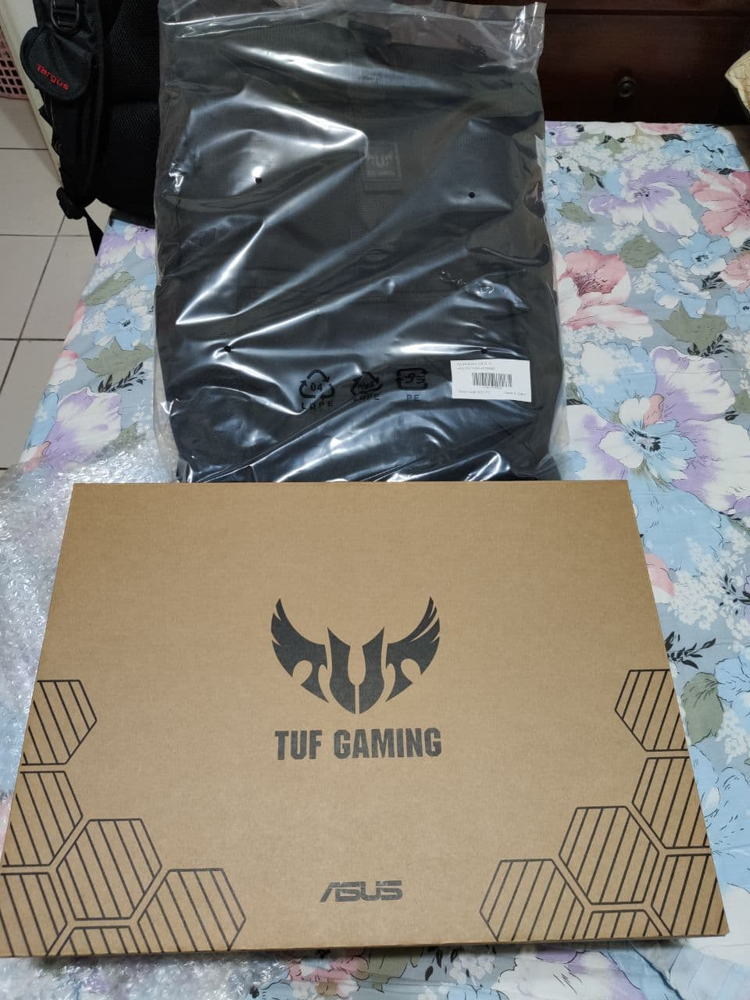
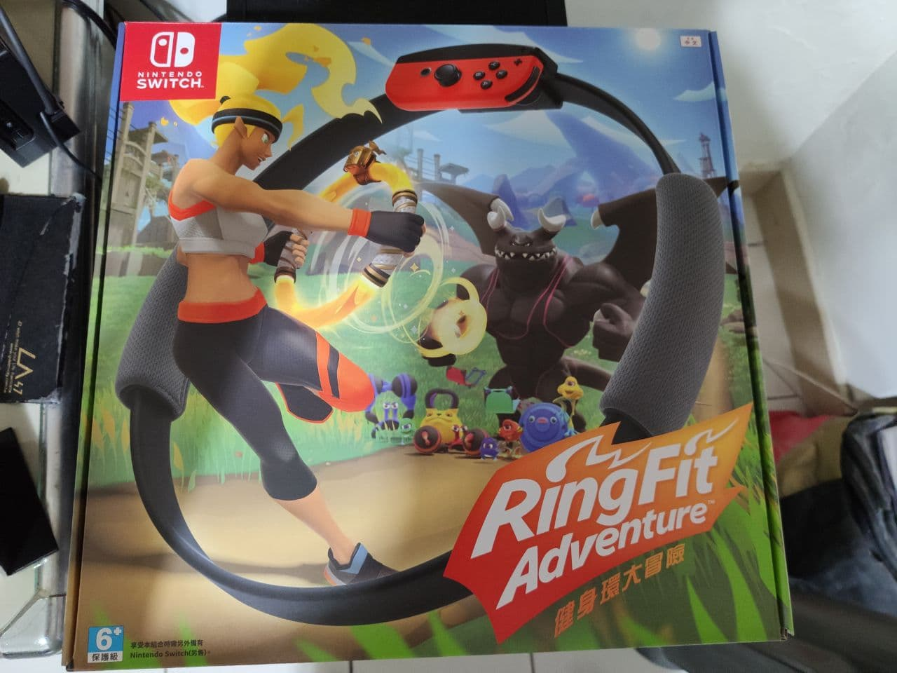

本周概要，本周二回家踢到了一個箱子…
沒錯，為了工作需求，買了台新筆電，規格如下：
簡單來說，就是還跟得上時代潮流的中階筆電。
接下來就是快樂的開箱時間啦~

拆開第一層外衣，內部有一個盒子以及一個背包，這個背包之前網路上看過，比起之前ROG那款好看太多了，出去也不顯過時。
打開箱子，可以看到TUG有做一些設計，單純的紙盒在拉開時就有了點造型，營造了時尚感。上方附贈了貼紙，下方則是這次的主角：筆電本人啦~
仔細地拿到身前打量，是霧面銀耶，一股貴氣迎面而來。
比電視窄邊框設計，這台是15.6吋。
盒中物就是些基本配備：滑鼠、筆電、說明書、充電器。值得一提的是這充電器，上面用了許多小點，讓單調的充電器意外的有了點時尚感。
到了周五，下午就是公司這一季的季慶生會~ 下午3點半就去領取餐點啦~我選的是烤雞*2、中薯*1、大快樂水*1，以及6個蛋塔!
到了假日，周六被jimmy學長約到三創逛逛，中午就久違的在忠孝新生2號出口的MOS解決啦~
我點的是這單人豪華套餐~
接著就到三創去~
6樓的扭蛋區，怎麼機台越來越多啦~
還有可愛的抱枕(?)
逛完2樓小米以及樓上後，到了一樓，就有陣陣香味撲鼻而來~
好像是名店? 在北車也有的樣子，因為排隊人潮眾多，雖然很香，但還是離開前往光華館繼續逛啦
本日戰利品(奢侈品?)：
128GB USB
原本手上有的隨身碟漸漸開始壞去，加上現在高容量也比以往便宜，就趁這機會去原價屋以$350入手了這款健!身!環!
沒錯，就是鼎鼎大名的健身環!
由 新垣結衣 操作的，剛推出就引起了熱潮!我到了3個月(應該沒記錯)的現在也還是下定決心入手了! 不指望有健身房般的效果，但希望我的肚肚跟腿腿能夠瘦一點QQ

回家後，就立刻開始遊玩了半小時，有流汗到呢~